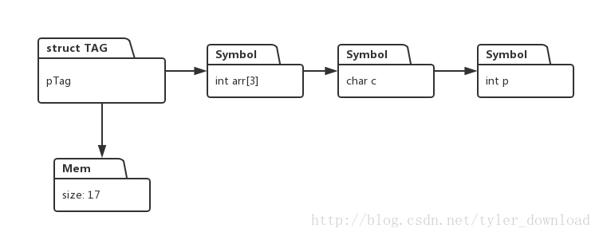

更详细的讲解和代码调试演示过程，请参看视频
用java开发C语言编译器
如果你对机器学习感兴趣，请参看一下链接：
机器学习：神经网络导论
当前我们开发的C语言解释器存在一个问题，就是下面的代码会被正确执行：
void main() {
struct TAG {
int p;
char c;
int arr[3];
}tag;
struct TAG* pTag;
pTag->c = 11;
printf("value of c in struct pTag is : %d", pTag->c);
}熟悉C语言的同学会知道，pTag是一个结构体指针，这个指针并没有指向一段有效的内存，但是接下来的代码却通过pTag去访问结构体成本变量c, 这就会导致野指针内存读写，好的情况下，这段代码会导致程序奔溃，最坏的情况是，它能够正常执行，但程序运行会出现诡异的，非常难以排查的bug。
我们这节的目的就是修正这个问题，同时使得解释器能够正确执行通过直接内存读取的方式，访问结构体的成员变量，完成本节代码后，我们的解释器能够正确执行下面的C语言代码：
void main() {
struct TAG {
int p;
char c;
int arr[3];
}tag;
struct TAG* pTag;
int sz ;
sz = sizeof(tag);
pTag = malloc(sz);
pTag->c = 11;
pTag->arr[0] = 1;
pTag->arr[1] = 3;
pTag->arr[2] = 5;
printf("value of c in struct pTag is : %d, and value of arr[1] is ", *(pTag+4), *(pTag+9));
}
当前我们的解释器的符号系统实现，使得结构体，它的变量有单独的存储空间，结构体里面的每个变量都对应一个Symbol对象，像上面的代码，结构体变量是一个指针，同时，代码通过malloc给这个指针分配了一片动态内存，于是这个结构体指针变量就对应两套内存，一套就是结构体成员本身就已经对应的Symbol对象，这就是为何对于一个没有分配内存的结构体指针，我们仍然可以通过它来访问成员变量, 如图：

现在我们需要做的是，要把成员变量的内容跟结构体指针指向的内存统一起来，也就是说，如果我们对结构体成员赋值后，结构体指针对应的内存也要做相关改变，以上面代码为例子，我们给成员变量c赋值，由于pTag指向整个结构体内存的起始地址，同时变量c上面有个4字节的整形变量，也就是c对应的内存是结构体起始地址偏移4字节，因此如果我们通过指针直接得到结构体的内存起始地址，然后访问偏移4个地址处的内存信息，所得到的数值，应该是与成员变量c一样的数值。也就是说，如果语句 pTag->c = 11; 执行后，那么语句*(pTag+4)得到的结果就是11。
我们在前面章节中，以及详细解释了如何实现sizeof, malloc, 以及指针内存读取*(pTag+4), 我们这节的任务就是让结构体成员的数值与分配的动态内存中的信息保存一致，我们的做法是这样的，当结构体成员被赋值后，不管是哪个成员被赋值，解释器直接把结构体中的所有成员包含的数值，直接拷贝到动态分配的内存里。
于是解释器的相关模块就得监控结构体成员被赋值这一事件，这种监控机制我们在上一节已经详细解释了，现在我们看看，一旦获取到结构体成员被赋值这一事件通知后，解释器如何把结构体成员的内容拷贝到动态内存中。内容拷贝是在执行单元UnaryNodeExecutor中执行的，代码如下：
public class UnaryNodeExecutor extends BaseExecutor implements IExecutorReceiver{
@Override
public void handleExecutorMessage(ICodeNode code) {
int productNum = (Integer)code.getAttribute(ICodeKey.PRODUCTION);
Object object = code.getAttribute(ICodeKey.SYMBOL);
if(object == null || (object instanceof Symbol) == false) {
return;
}
Symbol symbol = (Symbol)object;
if (productNum == CGrammarInitializer.NoCommaExpr_Equal_NoCommaExpr_TO_NoCommaExpr
&& symbol == monitorSymbol) {
System.out.println("UnaryNodeExecutor receive msg for assign execution");
copyStructToMem(structObjSymbol);
}
}
}一旦变量赋值发生后，上面的函数会被调用，在该函数中，它会判断当前发生的事件是否是变量赋值事件，如果是，再次判断被赋值的变量是不是结构体的成员变量(symbol == monitorSymbol), 如果是的话，执行函数copyStructToMem,遍历结构体中每个成员，把他们的数值内容拷贝到动态分配的内存当中。我们看看copyStructToMem的实现：
private void copyStructToMem(Symbol symbol) {
Integer addr = (Integer)symbol.getValue();
MemoryHeap memHeap = MemoryHeap.getInstance();
Map.Entry<Integer, byte[]> entry = memHeap.getMem(addr);
byte[] mems = entry.getValue();
Stack<Symbol> stack = reverseStructSymbolList(symbol);
int offset = 0;
while (stack.empty() != true) {
Symbol sym = stack.pop();
try {
offset += writeStructVariablesToMem(sym, mems, offset);
} catch (Exception e) {
System.err.println("error when copyin struct variables to memory");
e.printStackTrace();
}
}
}
private int writeStructVariablesToMem(Symbol symbol, byte[] mem, int offset) throws Exception{
if (symbol.getArgList() != null) {
return writeStructVariablesToMem(symbol, mem, offset);
}
int sz = symbol.getByteSize();
if (symbol.getValue() == null) {
return sz;
}
if (symbol.getDeclarator(Declarator.ARRAY) == null) {
Integer val = (Integer)symbol.getValue();
byte[] bytes = ByteBuffer.allocate(4).putInt(val).array();
for (int i = 3; i >= 4 - sz; i--) {
mem[offset + 3 - i] = bytes[i];
}
return sz;
} else {
return copyArrayVariableToMem(symbol, mem, offset);
}
}
private int copyArrayVariableToMem(Symbol symbol, byte[] mem, int offset) {
Declarator declarator = symbol.getDeclarator(Declarator.ARRAY);
if (declarator == null) {
return 0;
}
int sz = symbol.getByteSize();
int elemCount = declarator.getElementNum();
for (int i = 0; i < elemCount; i++) {
try {
Integer val = (Integer)declarator.getElement(i);
byte[] bytes = ByteBuffer.allocate(sz).putInt(val).array();
for (int j = 0; j < sz; j++) {
mem[offset + j] = bytes[j];
}
} catch (Exception e) {
// TODO Auto-generated catch block
e.printStackTrace();
}
}
return sz* elemCount;
}
private Stack<Symbol>reverseStructSymbolList(Symbol symbol) {
Stack<Symbol> stack = new Stack<Symbol>();
Symbol sym = symbol.getArgList();
while (sym != null) {
stack.push(sym);
sym = sym.getNextSymbol();
}
return stack;
}
copyStructToMem 先从HeapMomory中获得分配给结构体指针的字节数组。然后准备把结构体每个成员的数值都拷贝到这个字节数组中。在拷贝成员变量时，变量在结构体中的次序非常重要，每个变量要根据又前往后的顺序拷贝到内存里，从上图可以看到，结构体的成员变量队列是倒过来的，根据代码中给定的结构体例子，变量的排序次序是attr , c, p。reverseStructSymbolList的作用是把这些变量依次压入到一个堆栈中，该函数返回的堆栈对象内容如下：
stack: p
c
attr
这样一来，堆栈从顶到底，变量排列的次序就跟他们在结构体中出现的次序一致了。拷贝变量时，每次都从reverseStructSymbolList返回的堆栈顶部弹出一个变量对象来处理，拷贝的具体细节由writeStructVariablesToMem实现。
writeStructVariablesToMem首先判断要拷贝的变量是不是一个复合类型变量，也就是当前拷贝的这个变量是不是一个结构体变量，如果是，那么它要递归调用自己去拷贝一个结构体变量，如果不是，它接下来判断该变量有没有被赋值，如果没有，那么就没必要执行拷贝动作。如果有赋值，那么判断该变量是不是一个数组，如果不是数组，那么先获得该变量的字节大小，然后逐字节把变量的数值拷贝到内存数组中，如果变量是一个数组，那么就调用copyArrayVariableToMem 来处理。
copyArrayVariableToMem的逻辑是把数组变量的每个元素逐个取出，得到每个元素的字节大小，然后分别把每个元素依次拷贝到内存数组中。
当上面代码完成后，我们的解释器能够正确执行本节例子中，较为复杂的结构体内存读写操作，进而本节所给的代码例子能够被我们的解释器正确的执行。
本节内容有些繁琐，请参看视频以便获得更详实的讲解和代码调试演示过程。
更多技术信息，包括操作系统，编译器，面试算法，机器学习，人工智能，请关照我的公众号：